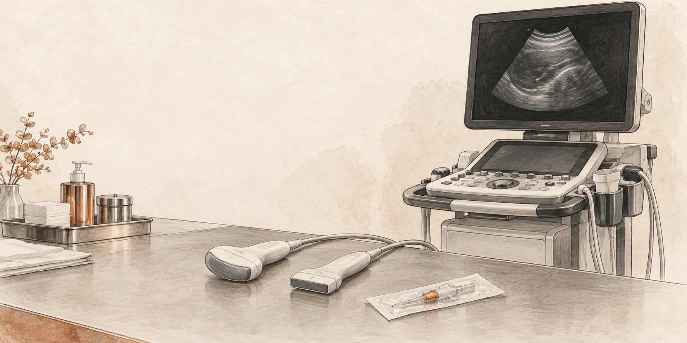

Foundations · 01
POCUS / Interactive masterclass
Before the diagnosis,
make a better image.
A practical foundation for cardiac, lung and haemodynamic ultrasound.

What you should be able to do
Choose a probe, establish orientation, optimise an image and explain what the machine can—and cannot—show. Then connect an adequate image to a focused clinical question.
In each laboratory, predict the change before moving a slider, then explain the mechanism. The simulations illustrate principles; their anatomy and grey levels are constructed, not patient scans.
- Question and pulse–echo physics5 min
- Probe handling and image quality12 min
- Artefacts and Doppler12 min
- Safe acquisition and reporting5 min
- Cases and retrieval practice10 min
Foundations · 02
What decision could this scan change?
“Do a POCUS” is a task. “Is there a large pericardial collection in this shocked patient?” is a question.
Before scanning, say what you are looking for, what finding would change management and what you will do if the images are inadequate. A focused examination has a defined scope; it does not silently become a complete echocardiogram.
In an unstable patient, resuscitation and assessment proceed together. Do not prolong scanning to obtain a textbook view. [1]
Acquire → describe → integrate → reassess
Acquire: obtain an interpretable view and confirm surprising findings in another plane.
Describe: state what is visible before naming a cause.
Integrate: combine the finding with perfusion, ventilation, examination and prior information.
Reassess: decide whether treatment worked using comparable observations.
Three possible answers: present, absent within the examination’s limits, or indeterminate. “Not visualised” belongs in the third category.
Try it: rewrite “scan for fluid status”
“In this patient with impaired perfusion, can a valid dynamic test demonstrate an increase in forward flow, and are there signs that additional fluid may be poorly tolerated?” This separates responsiveness from the decision to give fluid.
Foundations · 03
The machine estimates depth from time.
The transducer sends a short pulse and listens. Returning echoes are assigned a depth according to their travel time; echo strength contributes to brightness.
Assumed soft-tissue speed ≈ 1540 m/s
The division by two matters: sound travels to the reflector and back. B-mode combines many such lines into a two-dimensional image. A strong boundary is bright; weak returning signals are darker. [2]
The reconstruction assumes that echoes followed the expected path. Extra travel, refraction or an unexpected reflector can place an echo where no structure actually exists.
A deliberate pause
Imagine a reflector at 5 cm. The round trip is 10 cm and takes about 65 microseconds in the model. A repeated echo arriving later is displayed deeper, even if the physical reflector never moved.
That is far too fast to watch, so the laboratory slows the pulse down.
Schematic simulation · round-trip timing
Move the reflector deeper. Predict the time to receive the echo. The displayed timing is calculated; the moving pulse is slowed.
Foundations · 04
Choose enough resolution—and enough reach.
Higher frequency means a shorter wavelength, but generally greater attenuation. Use the highest frequency that still shows the target adequately.
A superficial vessel and a deep cardiac structure ask different things of the probe. High frequency cannot recover information that never returns from depth; increasing receiver gain may mainly amplify noise. Resolution also depends on pulse length, beam geometry and processing, not frequency alone. [3]
Schematic simulation · resolution versus attenuation
Compare 2, 5 and 12 MHz. The attenuation model uses a simple 0.5 dB/cm/MHz coefficient and a round trip; actual tissues, probes and compensation differ. Do not interpret the grey level as a clinical measurement.
Before adjusting gain, ask
Is the target too deep for this probe? Is rib, air or poor contact blocking the path? Can a different window shorten the path? Fix the acoustic route before asking amplification to compensate.
Foundations · 05
Match the footprint to the window.
| Probe | Useful starting point | Trade-off |
|---|---|---|
| Linear array | Superficial vessels, needle guidance, detailed pleural-line assessment. | High-frequency detail; a broad footprint may be obstructed by ribs and deep structures may be poorly seen. |
| Curvilinear array | Abdomen, diaphragm and deeper pleural or lung-base findings. | Wide deep field; near-field geometry is curved and superficial detail may be lower. |
| Phased array | Cardiac windows between ribs; useful when access is restricted. | Small footprint and sector field; very superficial structures can be harder to resolve. |
Probe frequency bands overlap and vary by machine. Choose the examination preset as well as the probe: it changes processing, dynamic range and other settings. Confirm the preset before comparing serial images. [3]
Practical sequence
- Identify the target and its approximate depth.
- Choose a footprint that fits the available window.
- Select the appropriate preset.
- Optimise depth, gain and focal position after finding the anatomy.
One probe does not answer every question
A crisp pleural line on a linear probe does not guarantee that the full depth of a large pleural collection has been examined. Change probes when the question changes.
Foundations · 06
Confirm the marker before interpreting left and right.
The probe marker corresponds to the screen’s orientation marker. Which side of the screen carries that marker depends on the selected convention.
Do not rely on a memorised “left is right” rule across machines and presets. Touch one end of the probe or make a small movement, find the matching screen edge, then establish the patient’s anatomical directions. Cardiac and general imaging conventions may differ.
Schematic simulation · physical slice and screen mapping
First reverse the probe, then move the screen marker to the right. Explain why either change can mirror the image. Rotate away from the short-axis plane to see why an oblique section makes a lumen appear elongated.
Movement vocabulary: slide moves the footprint; rotate changes the imaging plane; tilt or fan changes the beam direction; rock centres the target within the plane. Make one small adjustment at a time.
Why two planes?
A circular structure in one plane could be a vessel, cyst or another fluid-containing space. Follow continuity and examine an orthogonal plane. One cross-section does not describe a three-dimensional structure.
Foundations · 07
Optimise the image in a repeatable order.
Find the target, include its far boundary, then remove unnecessary depth. Set overall gain so borders remain visible without filling a fluid space with noise. Adjust time-gain compensation for depth-dependent differences. Place the focal region near the structure of interest. [3]
Schematic simulation · the same anatomy, different settings
Try depth 3 cm, then 8 cm. Next compare low and excessive gain, then move focus away from 5 cm. The phantom is simplified; its brightness is not calibrated to a clinical scanner.
Gain is not acoustic output
Receiver gain amplifies returning signals in the image chain. It is not the transmit-power control. If the problem is poor penetration, indiscriminate gain can produce a brighter but less interpretable image.
Do not crop away the answer
Reducing depth is useful only after identifying the target’s boundaries. A neat near-field image that excludes a deep collection has solved the wrong problem.
Foundations · 08
A sharper still image can be a poorer moving image.
Spatial resolution
Axial: separating reflectors along the beam; shorter pulses help. Lateral: separating reflectors across the beam; a narrower beam helps. Elevational: the slice has thickness, so echoes may enter from outside the ideal plane.
Two closely spaced structures can merge into one apparent boundary. The apparent edge is not always the true physical edge.
Temporal resolution
The system needs time to transmit lines and receive echoes. More depth, a wider sector and extra focal zones can reduce frame rate. A narrow sector around an already located cardiac target often makes motion easier to assess. [3]
Do not narrow the field so far that you lose the chamber relationships needed to recognise the view. Make the image useful before making it fast.
Teaching exercise: acquire the same moving valve with a broad deep field, then a focused shallow field. Compare how smooth the motion looks and whether important anatomy has been cut off.
Why magnification is not necessarily more information
Enlarging a frozen image enlarges existing pixels; it does not recover missing detail. Make acquisition choices while you are scanning, because a poor source image remains a poor basis for measurement.
Foundations · 09
A feature on the image may not be a structure.
An artefact is a clue about how sound travelled. Test it by changing the window, angle or settings and checking another plane.
Schematic simulation · physical path versus displayed image
These are teaching models, not every artefact. A real scan can contain several mechanisms at once.
| Mechanism | Recognise | Check |
|---|---|---|
| Reverberation | Repeated interfaces from additional sound travel. | Look for regular spacing and a plausible strong reflector; change angle or window. |
| Shadowing | Reduced signal beyond a highly attenuating or reflecting region. | Identify the proximal cause; move around it rather than labelling the darkness as fluid. |
| Posterior enhancement | Relative brightness behind a low-attenuation path. | Compare adjacent tissue at the same depth; assess the overlying structure in two planes. |
Side lobes, mirror images and slice-thickness effects can also create misleading echoes. Discordance between views should prompt an artefact check before a diagnosis. [4]
Foundations · 10
The beam measures the component of velocity along it.
In this model, the scanner assumes an angle of zero. A 60° beam-to-flow angle therefore displays half the true speed; at 90° the ideal Doppler shift is zero despite continuing flow. The angle is between the beam and the flow direction, not between the probe and the skin. [3]
Schematic simulation · angle and measured velocity
Set 0°, 60° and 90°. Predict the displayed peak each time. Absence of a Doppler signal does not establish absence of flow.
At the bedside: improve alignment, keep the sample in the intended structure and obtain a clean envelope before tracing. A numerical result does not repair a poor acquisition.
Cardiac Doppler generally relies on finding a window aligned with flow rather than applying an estimated angle correction. Formal vascular studies use their own angle-correction protocols; do not transfer that convention automatically to intracardiac measurements.
Foundations · 11
Different modes answer different questions.
| Mode | What it provides | What it does not provide |
|---|---|---|
| B-mode | Two-dimensional anatomy and motion. | A complete three-dimensional survey from one slice. |
| M-mode | Motion over time along one selected line. | Correction of an oblique or misplaced sampling line. |
| Colour Doppler | A map of Doppler information over a selected region. | An artery/vein label. Red and blue describe direction relative to the beam under the displayed map. |
| Pulsed-wave Doppler | Velocity information from a chosen sample volume. | Unlimited measurable velocity; sampling introduces aliasing. |
| Continuous-wave Doppler | High-velocity signals along the beam without the same PW Nyquist limit. | Unique depth localisation of the fastest signal. |
LVOT flow example
A PW sample placed at the intended LVOT location selects a local flow profile. A CW trace may include faster flow through the aortic valve. Those envelopes are not interchangeable simply because both appear systolic.
Colour example
Colour can help locate flow and guide sampling. Poor alignment, inappropriate scale, excessive wall filter or low gain can suppress a real signal. Excess colour gain can spread colour outside the true lumen.
Ask the learner
“Which mode answers your question, and what extra assumption have you introduced by selecting it?” The answer should refer to sampling, direction, location or timing.
Foundations · 12
Sampling can make fast forward flow wrap below baseline.
PW Doppler samples repeatedly. When the frequency shift exceeds half the pulse-repetition frequency, the displayed signal aliases.
The model fixes transmit frequency at 2.5 MHz and alignment at 0°. Increase peak velocity or lower pulse-repetition frequency (PRF). The physical flow remains forward even when its sampled envelope wraps to the opposite side of the display.
Schematic simulation · sampled velocity and wraparound
This narrow-band teaching waveform isolates aliasing. Real spectra contain a range of velocities and may be broadened by flow, sample-volume and instrumental effects.
Fix the acquisition
Raise the velocity scale/PRF if feasible, use a lower Doppler transmit frequency, or use CW when the question requires high-velocity measurement. Greater sampling depth can limit the available PRF. Maintain correct alignment rather than deliberately angling away to conceal high velocity.
What baseline shift changes
It reallocates the displayed velocity range above and below zero. It can improve use of the available range for one-directional flow, but does not increase the total unambiguous frequency span supplied by the PRF.
Foundations · 13
Quality comes from a repeatable sequence.
- Prepare: explain the examination, identify the patient, position comfortably, choose the probe and preset.
- Orient: identify the screen marker, landmarks and expected anatomical relationships.
- Optimise: adjust one control or probe movement at a time; recognise an off-axis view.
- Observe: watch several relevant cardiac or respiratory cycles rather than one favourable frame.
- Confirm: use another view or plane for unexpected findings.
- Save: retain representative clips, labels and measurements in the approved clinical system.
A useful stopping rule
Stop trying to “make it normal” when the image is non-diagnostic. State the limitation, change window or ask for help. A technically inadequate negative examination cannot safely close the clinical question.
Keep serial scans comparable
Record position, ventilation, rhythm, blood pressure and important treatment changes. Use consistent acquisition and measurement methods. If conditions changed, explain why two measurements may differ before calling the difference a treatment effect.
Store clips so another clinician can review the interpretation. Competence requires observed acquisition, interpretation and integration; a scan count alone is not proof of competence. [1]
Feedback that helps: “The target is small because the depth is excessive; reduce it while keeping the far boundary visible.” Give one specific correction, then let the learner repeat the acquisition.
Foundations · 14
Prepare the equipment as deliberately as the image.
Before and after the patient
Perform hand hygiene, remove gel and visible contamination, then use the disinfection process required for the transducer and examination. Follow the manufacturer’s compatibility and contact-time instructions and local infection-control policy.
External scanning on intact skin generally requires low-level disinfection between patients. Internal and intraoperative transducers require higher processing standards. A cover does not replace cleaning and disinfection.
For percutaneous procedures, use a single-use cover appropriate to the procedure’s sterility requirements. Use sterile single-use gel where sterile tissue or the procedure requires it. Clean the cable, controls and other touched surfaces as appropriate. [5]
Use ultrasound prudently
Ultrasound does not use ionising radiation, but acoustic exposure is not biologically inert. Use output and examination time sufficient for the clinical purpose, following the ALARA principle.
Know where thermal and mechanical indices are displayed. Do not increase output as a substitute for improving the window, receiver settings or probe choice. Training scans also need consent, infection control and proportionate exposure. [6]
Before a sterile procedure, decide which hand touches the patient, which touches the controls and how the probe and cable will remain within the intended sterile field.
Foundations · 15
A clear report makes the scan usable.
Document the indication, relevant conditions, scope, image quality, findings, interpretation and action. Include units and method for measurements. Record the operator, date and time, and where images are stored. Communicate urgent findings directly; do not rely on a saved clip being discovered. [7]
Constructed example: a limited scan
Question: gross ventricular dysfunction in postoperative hypotension.
Conditions: supine, mechanically ventilated, sinus rhythm, vasoactive support ongoing.
Quality and findings: subcostal window obtained; LV motion visible but endocardial borders incomplete. Apical and parasternal views non-diagnostic.
Interpretation: insufficient images to assess global or regional LV function reliably.
Action: continue clinical shock assessment; request expert echocardiography urgently. Representative clip saved.
Separate description from inference
“A dark space was seen beside the heart” is a description that still needs localisation. “Pericardial effusion” requires anatomical confirmation. “Tamponade” adds a haemodynamic interpretation.
Do not write “normal echo” when the examination answered only one focused question. List important structures not assessed and explain what remains unresolved.
Patient-identifiable images belong in approved systems. Teaching copies require appropriate authorisation and de-identification.
Foundations · 16
The near field is crisp. The question is still unanswered.
A patient has dyspnoea. A high-frequency linear probe shows a clear pleural line, but you cannot establish the deep extent of a suspected basal collection.
The learner increases gain until the image becomes uniformly bright. The deep boundary remains indistinct. They report “small effusion” because only a small dark region is visible.
What should you change before accepting that conclusion?
Reveal the reasoning
Change the acquisition to answer the depth question. Consider a lower-frequency curvilinear or phased-array probe, an appropriate preset and a window that includes the diaphragm, adjacent organ and full collection. Recheck depth and gain after locating the anatomy.
The apparent size was limited by the view. Receiver gain did not restore a missing deep boundary. If the examination still cannot define the collection adequately, document the limitation and obtain further imaging or expert assessment.
Return to the frequency laboratory: identify which control improves reach, then explain what superficial detail you may sacrifice.
Transfer: the best probe is the one that answers the current anatomical question. An attractive near-field image is not evidence of an adequate deep survey.
Foundations · 17
A bright line appears twice.
During a focused cardiac scan, a strong interface is followed by a fainter parallel line at a regular interval. The second line seems to lie inside a chamber.
The learner calls it a membrane. On a second window, the additional line changes position relative to the surrounding anatomy and becomes much less conspicuous.
How would you distinguish a real structure from an artefact?
Reveal the reasoning
Keep the finding descriptive until it has been tested. Ask whether it follows anatomical boundaries, persists coherently through motion and can be reproduced in another plane. Review the strong proximal reflector and the regular spacing; reverberation is a plausible mechanism in this constructed example.
Alter probe position and beam angle, then optimise gain without erasing genuine boundaries. An artefact may change with these manoeuvres, but disappearance alone does not prove that an important structure was never present. If clinically consequential uncertainty remains, obtain expert imaging.
Use the artefact laboratory to show how repeated travel can create a second displayed line without a second physical reflector.
Transfer: confirm a surprising finding in independent views. Do not build a major diagnosis from one ambiguous line.
Foundations · 18
The trace crosses baseline after you lower the scale.
A PW Doppler waveform was entirely above baseline. After the velocity scale is reduced, its peak wraps to the lower half of the display. The sample volume and haemodynamic conditions are unchanged.
Has the blood reversed direction?
Reveal the reasoning
The timing and change with scale support aliasing. Raise the PRF/velocity scale and inspect the complete envelope. Check the baseline, sample location, beam alignment and whether PW is the right mode for the intended measurement.
Actual reverse flow remains a clinical possibility in other circumstances; distinguish it by a coherent correctly acquired waveform and the anatomical context, not by display colour or sign alone.
In the laboratory, keep true flow fixed at 1.2 m/s and lower PRF from 10 to 2 kHz. Explain which quantity changed in the patient model: none. The sampling limit changed.
Transfer: changing a machine setting can change the apparent pattern without changing the patient. Recognise the acquisition mechanism before inventing a physiological explanation.
Foundations · 19
Predict the result before touching the control.
Next supervised practice: acquire one view, explain its orientation, improve one technical limitation, save the clip and report what the image cannot establish.
Foundations · 20
Sources and further practice
Source: SCCM POCUS Day 1 (physics and clinical integration). Local clinical, infection-control and competency requirements still apply.
- ACEP. Ultrasound guidelines: emergency, point-of-care and clinical ultrasound. Read the guideline →
- US Food and Drug Administration. Ultrasound imaging. Read the overview →
- Mitchell C et al. ASE comprehensive adult transthoracic examination. J Am Soc Echocardiogr. 2019;32:1–64. Read the guideline →
- ASE. Identification and mitigation of cardiac ultrasound artefacts. 2026. Read the recommendations →
- AIUM. Cleaning and preparation of ultrasound transducers and coupling gel. 2025 revision. Read the statement →
- AIUM. Prudent clinical use and safety of diagnostic ultrasound. Revised 2024. Read the safety statement →
- AIUM. Documentation of an ultrasound examination. 2025 revision, published 2026. Read the practice parameter →
Continue with a clinical question
Learn focused cardiac ultrasound →
The simulations are teaching phantoms. They use no patient data, make no diagnosis and do not assess competence. Frequency attenuation is simplified; Doppler values are calculated from the stated ideal assumptions.